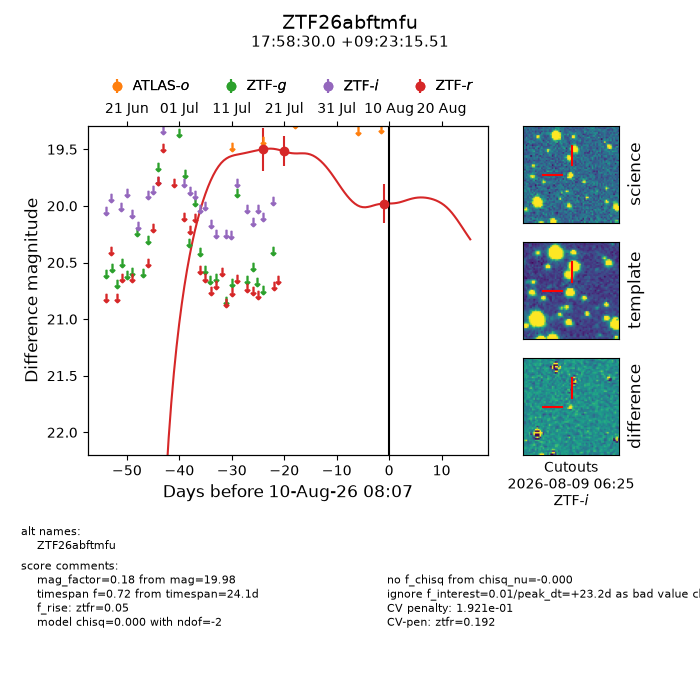
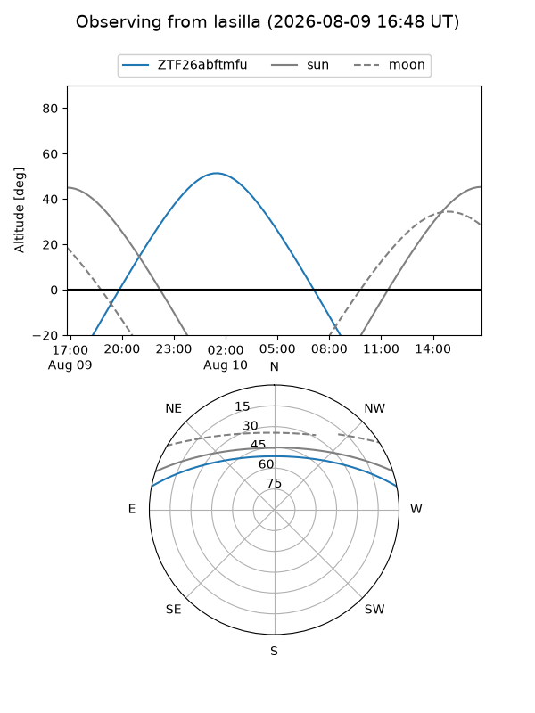
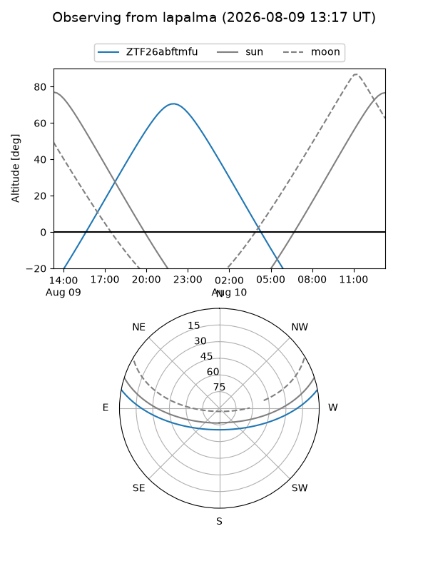
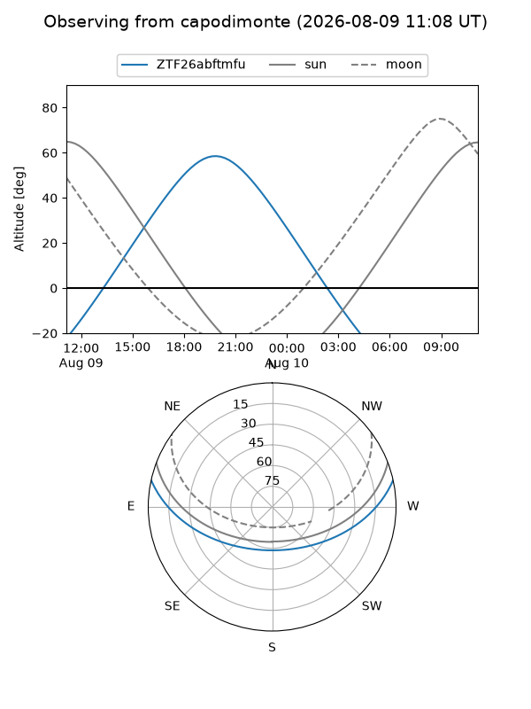
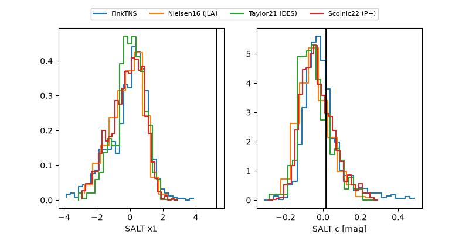

ZTF26abftmfu
Target ZTF26abftmfu at 2026-08-10 08:10
Aliases and brokers:
FINK-ZTF: ztf.fink-portal.org/ZTF26abftmfu
Lasair-ZTF: lasair-ztf.lsst.ac.uk/objects/ZTF26abftmfu
ALeRCE-ZTF: alerce.online/object/ZTF26abftmfu
Direct TNS query: direct search
alt names
ZTF26abftmfu (ztf,fink_ztf)
Coordinates:
equatorial (ra, dec) = 269.6250,+9.38764
equatorial (HMS+DMS) = 17:58:29.99,+09:23:15.51
galactic (l, b) = (35.4464,+15.98584)
Flags:
peak dt: +23.2
likely cv: !!
Photometry:
last ztfr=19.98
3 ztfr detections
Lightcurve

Visibility



Additional plots
